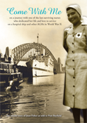

Come With Me

Sold Out Come With Me is a story of true service to others in war time. Joan Fisher was only a young girl of 21 when she enlisted to become a voluntary aid. Little did she know that her journey would take her on a hospital ship, to the Atherton Tablelands and finally to Borneo where she nursed the prisoners of war after the war was over. Joan felt privileged to nurse wounded soldiers back to health with love and devotion. Life after the war was difficult for these ladies and settling down to civilian life took time. Joan finds love and marries and follows her teacher husband around many small country schools with two young boys. Joan's story is truly inspirational and she has given of herself to others all through her life. Book launch was in Feb 2010 with Professor Marie Bashir, Governor of NSW to launch the book. See what people are saying about the book - click here Book review - click here  Come With Me gained the No 1 bestseller for non-fiction at her local book shop. Next Chapter Books in Warriewood. |
|